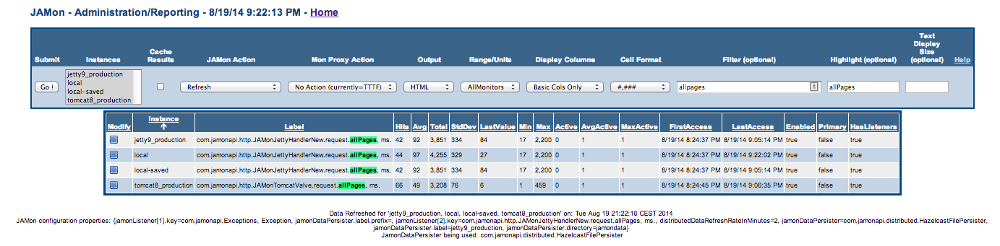

Modern software is often distributed. An application might have multiple web servers, message brokers, a distributed file system and more. This makes detecting performance problems and determining application health difficult. JAMon 2.78+ has improvements that make monitoring distributed applications easier.
Some instructional videos follow:With previous versions of JAMon it was only possible to view JAMon statistics separately on each host where JAMon was installed. JAMon now allows developers to centrally view the JAMon data of ALL JVMs from any JAMon web application. The ability to view statistics of a distributed application from a central location is invaluable. This same capability can be used to view multiple applications that your organization has even if they reside on different servers.
JAMon 2.79+ also allows you to query the data on all of the servers in your cluster. You select the instances that you would like to apply the query against in the 'Instances' multi-select box, and enter your query in the 'Filter' text box. The query will be run against all selected instances. The following example demonstrates looking at all page hits on each of 4 selected servers.

JAMon not only tracks summary data, but it lets you look at details of interest such as specific information about your slowest pages, or any stacktraces from exceptions you application has thrown. This data is viewable from all servers in your cluster. The following shows a Tomcat stacktrace being viewed from a Jetty server.

Note you can also choose to cache the results. This allows you to analyze the data and not have it change should you refresh the page.
You will also see 'local' and 'local-saved' in the 'Instances' multi-select box. 'local' is the live real-time JAMon data on the host you are connected too. As of JAMon 2.79 the local data is also saved on a timer (by default every 5 minutes). 'local-saved' is this saved data. The file is replaced every 5 minutes by default, however you could create a cron job to copy or rename the file to keep more backups. Any JAMon data in the JAMon data directory can be viewed from the JAMon Web application. The file location is configurable in the jamonapi.properties file.
JAMon ships with the ability to save the monitoring data to a distributed HazelCast Map. By default the data will be saved every 5 minutes and is done at the same time that the JAMon data is persisted to a file.
Saving of JAMon data is done with a JamonDataPersister. Developers can provide their own implementations too. JAMon implements this capability with a new interface (JamonDataPersister) which is called from the timer. A JamonDataPersister implementation enables a developer to do anything they want with the serializable JAMon data (MonitorComposite). JamonDataPersister has three primary methods: put, get, remove. They are used to save, retrieve, and delete JAMon data associated with a specific server.
The HazelCast implementation will automatically be called if the HazelCast jar is found in the classpath (The java class that implements this is HazelcastPersister). This implementation puts a serialized version of JAMon data into a HazelCast distributed HashMap. The server hostname/port will be the key, and the serializable JAMon data as the value. Or you can define your own key name in jamonapi.properties.
Developers can easily implement JamonDataPersister and perform their own actions on JAMon data. A few examples follow:HazelCast has other powerful capabilities that developers can take advantage of. For example you could use HazelCast to run map/reduce jobs on the JAMon data.
To change the save frequency (defaults to 5 minutes) or to change the use your own JamonDataPersister either put jamonapi.properties in your classpath, or provide command line arguments when you invoke your program (Example: -DdistributedDataRefreshRateInMinutes=2 -DjamonDataPersister=com.steve.MyPersister). Command line properties take precedence over the properties file.
See your jvm, and container documentation for more information about where the jamonapi.properties file can be placed.